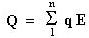
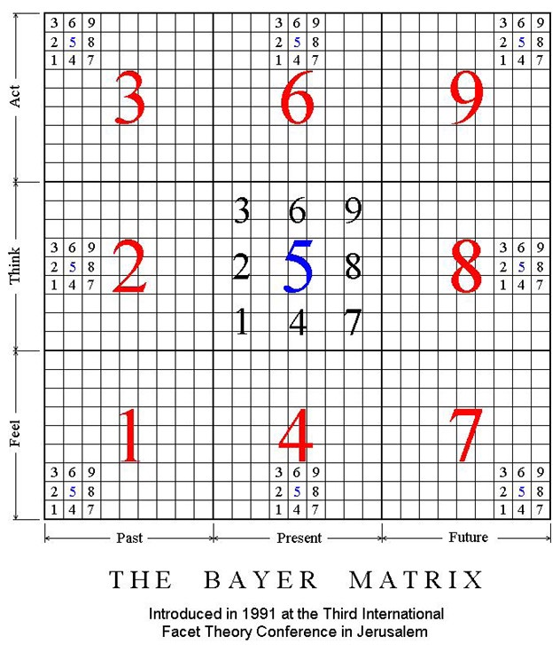

© BAYER 1997
THE TENSORIAL POWER OF WORDS
Ben Bayer
Adelaide, Australia
Abstract. Language is, on balance,
one of our most powerful means of expression and communication. Its building
tools are words and this paper examines their tensorial power. The Matrix,
a conceptual framework which integrates the four elements feel/think/act/time
into a single holistic landscape of values and entities, provides the perspective
background against which this power and the way it operates can be demonstrated.
The word/meaning nexus is captured in the Matrix expressions, usually in
numerical form with radicals and fractals. The emerging lexicon of key
words supports meaningful coherent relationships in the Matrix landscape
both in focus and perspective.
A tensorial integration relationship is postulated to provide a link between
three basic parameters: Quality, Entity and Quantity. The dynamic concept
of Tensors reflects the dynamic qualities of words clarifying and putting
in focus their potential.
The faceted format for articulating definitions provides a valuable series/parallel
continuum which helps comprehension through clarity. Language, through
its key words, single words, polar words, provides the tensorial power
which energises the thinking and communication processes. The polarised
concepts of covariance and contravariance and in particular the sensitive
concept of Equivalence help the harnessing of this power towards the positive
high ground. Critical versus creative thinking is examined and extended
to include logic (25.0), reason (75.0), rationality (55.0), legitimacy
(77.58), morality (97.58) and metricity (99.55).
Merging their tensorial strength, Analysis (82.25), Balance (55.55) and
Creativity (86.85) combine in partnership to achieve Optimisation (59.96),
the fairest and most effective pathway for the promotion of human progress
and harmony.
1. Introduction
This paper examines the power of words in terms of the mathematical concept of tensors. There is no mathematical treatment intended, just the concept of WORDS as dynamic entities operating in multiple directions at varying magnitudes and, through these defining attributes, wielding a real or perceived power that becomes an intrinsic part of the thinking process.
The framework of reference against which this notion of tensorial power can be demonstrated in visual form is the Matrix.
2. The Framework
The Matrix provides the conceptual framework within which all concepts and entities are projected. It is a framework which integrates the four elements feel/think/act/time into a single holistic landscape of values and entities, allowing visualisation of conceptual notions and relationships graphically and numerically. Of modular construct with decimal continuity, it forms a universal framework accommodating conceptual totality and functional flexibility.
A 4-page MATRIX STATEMENT giving details of the Matrix construction, its rationale and a number of associated corollaries is readily available. It can be downloaded from the Internet, Web site http://www.ozemail.com.au/~bayerben/
2.1 The Matrix coverage
The full spread of the Matrix coverage lends itself to a basic lexicon of key words and meanings which could be associated with each of the Squares. Such linkage would present a general first order of relationships as the flexibility of the Matrix, through its mobility to suit purpose, allows other patterns to be projected.
The following tabulation is intended only as a draft open ended display of some of this lexicon, covering elements within a third of the Matrix landscape.
| 39.9 agreement 39.5 accommodation 39.0 negotiation 35.9 liberation 35.5 freedom 35.0 protection 33.9 disruption 33.5 conflict 33.0 aggression |
69.9 achievement 69.5 success 69.0 status 68.9 leadership 68.5 skill 68.0 ability 66.9 authority 66.5 strength 66.0 power |
99.9 fulfilment 99.5 order 99.0 vision 96.9 excellence 96.5 merit 96.0 accomplishment 95.9 harmony 95.5 happiness 95.0 quality |
|
| 25.9 security 25.5 clarity 25.0 logic 23.9 misleading 23.5 misguided 23.0 error 21.9 confusion 21.5 fear 21.0 uncertainty |
59.9 commitment 59.5 will 59.0 optimisation 55.9 choice 55.5 comprehension 55.0 balance 54.9 emergence 54.5 accretion 54.0 retention |
89.9 ideals 89.5 hope 89.0 values 86.9 creation 86.5 concept 86.0 design 85.9 inspiration 85.5 talent 85.0 opportunity |
|
| 15.9 safety 15.5 awareness 15.0 vigilance 13.9 cruelty 13.5 punishment 13.0 hurt 12.9 oblivion 12.5 silence 12.0 suppression |
49.9 certainty 49.5 confidence 49.0 belief 48.9 involvement 48.5 motivation 48.0 interest 45.9 comfort 45.5 fairness 45.0 acceptance |
77.9 joy 77.5 indulgence 77.0 empathy 75.9 well being 75.5 sanity 75.0 reason 73.9 delight 73.5 excitement 73.0 fun |
2.2 Matrix expressions
They are numerical codes allocated to concepts and entities, in accordance with perception, to achieve the best fit on the Matrix landscape.
The decimal point in the expression separates the “Radical” on its left which is the selected starting position from the “Fractal” on its right which is the decimal emphasis representing the direction of change.
For example, leadership (59.86) and consensus (59.75) share the radical 59 (choice/optimisation) but differ in the decimal emphasis, 86 (design) and 75 (reason) respectively.
The determination of a Matrix expression relating to an entity gets its validation from tests of perception (25.45), equivalence (55.386) and coherence (49.55). For this reason, the Matrix expressions presented in this paper should be considered as a first draft, open to and inviting debate.
3 Tensorial integration
The relationship

is postulated to provide a linkage between three basic parameters:Quantity (q) which is a measurement
Entity (E) which is a concept
Quality (Q) which is a perception
n is the number of multiple entities associated with a given situation and generally indicates the degree of dimensional complexity. Semantic ambivalence which results in differing perceptions can often be traced to elements of the above relationship.
The mathematical concepts of scalar (magnitude, no direction), vector (magnitude, one direction) and tensor (magnitude, more than one direction) are helpful in visualising the above process. Quantities are scalars, Entities are tensors, and Quality, also a tensor, is the aggregate "bottom line". In somehow remarkable fashion, the "right" words can provide the correct fit for these complex realities. Conversely, the "wrong" words can throw the whole edifice out of kilter.
Another mathematical assistance flowing on from Newton’s work allows a process of “corrective iterations” increasing accuracy at each step of the iteration. An analogous process takes place in individuals reflecting and groups negotiating, offering opportunities to advance problems towards their optimum or natural solutions.
4. Definitions
Facets are a key element of the Facet technique developed by Professor Louis Guttman and used with high effectiveness in applied social research. By grouping a number of elemental words vertically between bracketing lines in the horizontal flow of a sentence, facets achieve a functional and compact form which allows a large number of permutations to be presented at a glance, simply and clearly.
Facets are most valuable in formulating definitions because they allow complex meanings to be presented in a sequence of simple structures where the qualities of clarity and acceptability can be readily verified.
5. Language
Language is, on balance, one of our most powerful means of expression and communication. Its building tools are words and hence their critical importance in shaping the communication process.
Words are defining.
Single words can, with benefit to efficiency and effectiveness, substitute for rambling descriptions. Clarity is enhanced when the right single words are selected. It may not lead to consensus but it presents a focused picture for meaningful debate. An example is the issue of affirmative action based on need (41.37) rather than race (44.87).
Polar words are single words with emphasis placed on polarity. Polar words at once suggest a scale of values with two or more polarities.
Instant access to the lexicon of key words and their corresponding Matrix expressions is facilitated by sorting them out ordinally in two registers, one alphabetical (dictionary fashion) and the other numerical.
The numerical register allows the chromatic changes to be viewed at short range, facilitating the evaluating role of perception.
The word/meaning nexus is a dynamic relationship which responds to changing needs, changing times, fast developing technology and ever increasing sophistication.
Existing words get redefined, new words and new structures are created. It is important, at the key word level, to retain coherence and continuity.
I would like to float the word Metricity (99.55) as the proactive word integrating optimally logic (25.0), reason (75.0), rationality (55.0), legitimacy (77.58) and morality (97.58).
6. Relationships
6.1 Equivalence
Equivalence (55.386) is possibly the most critical and powerful element of relationship. While Equivalence is not Equality (55.55), it postulates the equating between entities in a well defined context.
Equivalence recognises - as equivalent - causes producing the same effect or effects producing the same perception. The Matrix horizontal and vertical lines provide alignments of Equivalence which accord with common perception. One element of basic import when considering equivalence is the direction or arrow of time.
The words transformation, projection, conversion, correspondence, coalescence are related to equivalence.
6.2 Polarity
Polarity is generally qualified by the words positive (58.89), negative (22.23), neutral, different.
Covariance and contravariance are polarity relationships between entities moving in-phase or out-of-phase with each other. Correlations investigate the magnitude aspect of these entity relationships.
Entropy (33.512) is a natural negative mechanistic universal energy polarity which it is interesting to compare to its positive opposite (33.596) and the forces of creativity (86.85).
6.3 Association and Analogy
They are very important relationship tools. Association (45.45) is passive, triggered by proximity, contiguity or similarity of form. Analogy (85.85) is proactive and recognises similarity of internal relationships between two systems or two complex entities.
The basic process is self organising (25.56) mental patterns. These patterns end up perceived as close neighbours in association, and recognised as linked by similar mechanisms in analogy. To some extent the two processes are partial elemental forms of Equivalence.
6.4 Analysis and Synthesis
Analysis (82.25) and Synthesis (82.86) are two aspects of the thinking process which frequently follow each other in that order. Analysis separates and relates elements of a context situation along logical lines (25) and synthesis projects a desired new situation from this preceding analytical work along creative lines (86). Without the constructive synthesis the analysis can remain a job half done.
6.5 Balance and Creativity
Balance corresponds to square 55, to the central square in all the blocks and to cell 5 in all the squares. It is always a powerful catalyst towards the right direction (59). It extends analysis by lifting the dissected context situation to a more complete, more inclusive, more holistic level which would satisfy the demands of reason, but not yet necessarily the opportunities of optimisation. The potential to stretch that extra mile is left to Creativity.
Creativity (86.85) is the driving force in the Design paradigm (86.0). The forum for creativity is Block 8. It is at the centre right of the Matrix, about the future, the new, the innovative, the valuable, the cultural, the useful, the beautiful. To stand the test of polarities, it must be recognised not only by the author/creator (8), but as importantly by his contemporaries, the market (6). Achieving both is a measure of real success (69) and fulfilment (99).
7. Optimisation
Optimisation (59.96) as opposed to maximisation (64.66) is the best
choice (59) focusing on accomplishment (96). As the process outcome is
a tensorial integration of factors and parts, the relationship at section
3 can be expressed as:
(i) Optimisation is maximisation in the right direction.
(ii) Optimising the whole is by sub-optimising the parts.
8. Displays
Display of entities on the Matrix helps define identities, similarities, differences and relationships with a balanced reference always available for focus and perspective.
The selection for display includes
Truth and reality
Tensorial integration
The five W’s and How
The Logic paradigm 25.0
The Belief paradigm 49.0
The Design paradigm 86.0
Thinking modes
The six thinking hats
Self organising/plus others
Urgent/Important/Priority
Self interest/Best interest
Humour
Choice (focused) and Implementation (skilled)
Optimisation
9. Conclusion
Words are only a tool but their critical role in communication as well as the various thinking processes gives them a corresponding critical importance, especially at the level of key, single and polar words.
The Matrix, by providing a unified holistic framework of reference for meanings and entities, allows the characteristics of words to be defined and recognised to their full dynamic potential.
If we consider the quality of life in terms of human progress and harmony as the worthwhile goal to aim for, Optimisation appears as the fairest and most effective pathway to achieve it. A familiar combination operating in partnership to achieve optimisation is Critical and Creative thinking. Looking at other defining words and their tensorial potential, one could also suggest Analysis (82.25), Balance (55.55) and Creativity (86.85).
 |